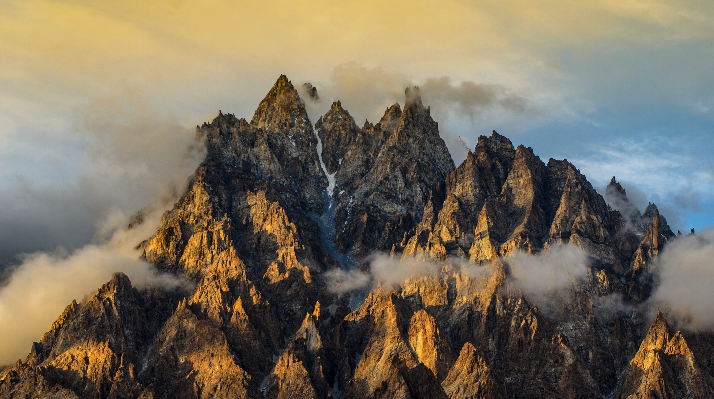

<div class="portfolio-single-load clearfix">
    <div class="custom-full-width-box">
        <div class="custom-container">
            <div class="custom-row align-items-center">
                <div class="custom-image-column">
                    
                </div>
                <div class="custom-text-column">
                    <h2 class="custom-heading">Passu</h2>
                    <p class="custom-paragraph">
                        Passu, located in the Hunza Valley, is renowned for its dramatic landscapes and iconic landmarks. With a population of around 1,500 people, the village offers a tranquil retreat amidst towering peaks and lush greenery. Visitors can explore attractions like Passu Glacier and Batura Glacier, experiencing the valley's natural beauty and cultural richness. Passu is an ideal destination for trekking and mountaineering adventures.
                    </p>
                </div>
            </div>
        </div>
    </div><!-- .custom-full-width-box end -->

</div><!-- end single-project -->
